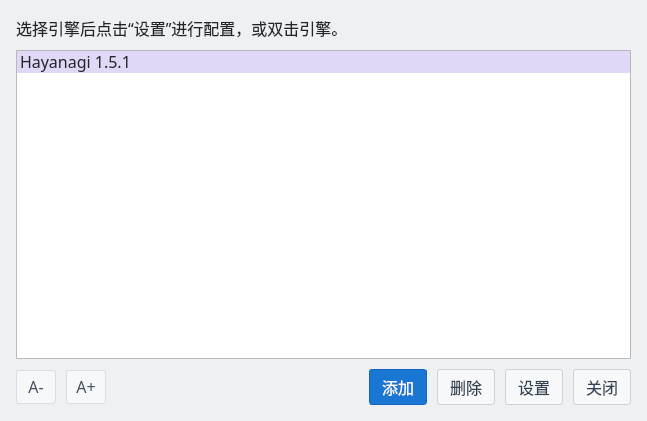
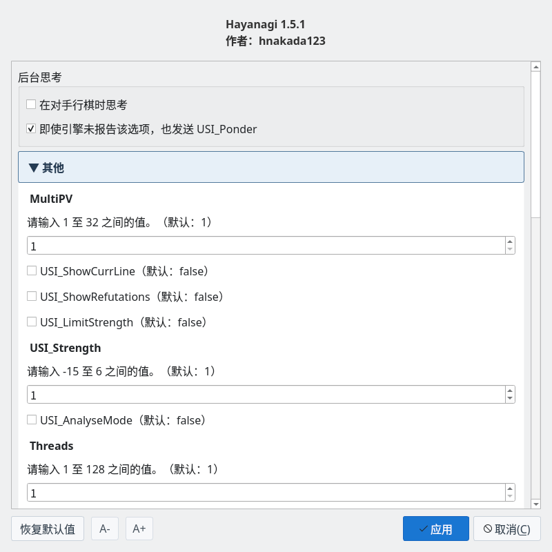

将棋引擎 Hayanagi
从对局、研究到诘棋中的守方
截图在 Linux 上以简体中文界面拍摄。
什么是 Hayanagi
与 ShogiBoardQ 配合使用、以 C++17 实现的将棋引擎
Hayanagi 是支持USI 协议（将棋 GUI 与引擎交换着法和搜索结果的协议）的将棋引擎。它作为 ShogiBoardQ 的 Git 子模块管理，用同一套源码构建普通对局用的可执行文件和诘棋用的内置库。
| 用法 | 功能与准备 |
|---|---|
| 注册为 USI 引擎 | 可用于对局、棋谱分析、研究和诘棋搜索。在“引擎注册”中注册可执行文件。 |
| 在诘棋练习中内置使用 | 用于判定题目和走守方的应着。它内置在 ShogiBoardQ 中，无需注册引擎。 |
源码和详细规格公开在 Hayanagi 的 GitHub 仓库。本页基于子模块中的 Hayanagi 1.5.1。
对局与棋力调节
支持基本时间、读秒、加时，以及对手回合中的后台思考。可通过限制搜索量调节棋力。
研究与棋谱分析
输出评价值、主要变化、搜索深度和节点数。可用 MultiPV 比较多个候选着法。
定式与对局规则
支持 YaneuraOu 的 DB2016 格式定式，并使用由 Floodgate 棋谱生成的独有定式。还能判定千日手、连续将军的千日手、持将棋和入玉规则。
专用的诘棋搜索
搜索以连续将军达成的强制将死。可处理没有攻方王的局面，作为守方时返回最长抵抗或解围的应着。
在 ShogiBoardQ 中使用
普通对局和研究需要注册 USI 引擎的可执行文件
准备可执行文件
Linux 版的发布 ZIP 中，可以使用解压后文件夹里的 Hayanagi/hayanagi（AppImage 内部不包含）。Windows 版和 macOS 版的发布包目前未附带 Hayanagi，请从源码构建。
从源码构建 ShogiBoardQ 时，会生成 build/Hayanagi/hayanagi。在 Windows 上文件名带有 .exe，并可能因构建方式位于 Release 等子文件夹中。只构建 Hayanagi 时请参阅构建方法。在 Linux 和 macOS 上请选择有执行权限的文件。
在引擎注册中注册
选择“设置”→“引擎设置…”打开“引擎注册”，点击“添加”并选择 Hayanagi 的可执行文件。列表中显示“Hayanagi 1.5.1”即注册完成。

引擎注册：列表中显示“Hayanagi 1.5.1”
点击“设置”（或双击引擎）打开引擎设置，可以更改线程数、棋力等。带截图的操作说明请参阅引擎注册指南。
主要引擎设置
可根据用途调整已注册 USI 引擎的设置

引擎设置：可更改“后台思考”以及 Hayanagi 报告的选项值
| 选项 | 内容 |
|---|---|
Threads | 搜索使用的线程数。默认值为 1，范围为 1～128。请根据电脑的 CPU 和其他工作来设置。 |
Hash / USI_Hash | 普通搜索中记忆局面的内存量（MB）。两者设置的是同一个表，默认值为 16 MB。 |
MultiPV | 输出的候选着法数。引擎支持 1～32。ShogiBoardQ 的研究中使用“候选着法”的设置。 |
USI_Ponder | 对手回合中的后台思考。默认关闭。在引擎设置的“后台思考”中，用“在对手行棋时思考”切换。 |
USI_LimitStrengthUSI_Strength | 启用棋力限制后，用 -15～6 的值限制搜索深度和节点数。负数大致对应级位，正数对应段位，0 视为 1 级。默认不限制棋力。 |
USI_AnalyseMode | 分析用模式。会禁用棋力限制、按定式即时应答、自动认输和后台思考请求。不限时搜索需另行指定。 |
USI_OwnBookBookDir / BookFile | 指定是否使用定式以及读取哪个文件。默认启用，读取可执行文件所在位置的 book/hayanagi_book.db（将 BookFile 设为 no_book 即不使用定式）。从源码构建时，定式文件会放到构建目录中。发布包不附带定式，此时引擎不使用定式，仅靠搜索走棋。 |
EnteringKingRule | 引擎自己进行入玉宣言的标准。可选择 24 点法、27 点法、试玉规则等，默认值为 CSARule24。宣言是否成立由 ShogiBoardQ 对局对话框中“持将棋”选择的规则判定。 |
棋力设置的段级位是经对局校准前的参考值，不保证与人类的段级位一致。Hayanagi 是使用简易评价函数的最小构成引擎，评估子力得失、棋子活跃度和王的安全度等。
此设置表适用于已注册的 USI 引擎。诘棋练习的内置判定使用题目列表的“诘棋引擎”“搜索时间”，以及练习画面的“搜索时间”。
诘棋搜索与诘棋练习
区分将死、不诘和未判定，并调查攻方与守方的着法
| 用途 | 动作 |
|---|---|
| 诘棋搜索 | 通过标准 USI 的 go mate 请已注册的 Hayanagi 搜索。找到将死时，返回包括守方最长抵抗在内的全部手顺。 |
| 诘棋练习 | 由内置 Hayanagi 判定题目，并针对用户的将军走守方的应着。错过将死时会显示解围的着法。 |
| 诘棋局面生成器 | 由内置 Hayanagi 预先筛选候选局面。也可以选择已注册的 Hayanagi 作为确认将死的 USI 引擎。 |
标准 USI go mate 的搜索上限为 63 手，ShogiBoardQ 诘棋练习中进行的内置初始局面判定最多 31 手。超时和达到搜索上限会与“证明不诘”区分处理。
由于是深度优先搜索，长手数的诘棋（大约 15 手以上）可能需要较长时间。长手数的题目可以在题目列表的“诘棋引擎”中选择另行注册的 KomoringHeights（已注册时，首次打开会选择 KomoringHeights）。此时守方的应着仍由 Hayanagi 走，并根据 KomoringHeights 的将死手数选择应着。
从源码构建
可以与 ShogiBoardQ 一起构建，也可以只构建 Hayanagi
与 ShogiBoardQ 一起构建
在 ShogiBoardQ 仓库的根目录执行。获取子模块后正常构建，即可生成应用和 Hayanagi。
git submodule update --init --recursive
cmake -B build -S . -DCMAKE_BUILD_TYPE=Release
cmake --build build --config ReleaseQt 等准备请参阅从源码构建中各操作系统的步骤。在 Linux 和 macOS 的一般配置中，注册引擎时使用 build/Hayanagi/hayanagi。定式文件放在 build/Hayanagi/book/hayanagi_book.db。
只构建 Hayanagi
获取子模块后，在 ShogiBoardQ 仓库的根目录执行以下命令。Hayanagi 本身不依赖 Qt，需要 CMake 3.16 以上和支持 C++17 的编译器。
cmake -S Hayanagi -B build-hayanagi -DCMAKE_BUILD_TYPE=Release
cmake --build build-hayanagi --config Release
./build-hayanagi/hayanagi --version最后一条命令是 Linux 和 macOS 的示例，会显示 Hayanagi 1.5.1。在 Windows 上请运行输出目录中的 hayanagi.exe。USI 命令、搜索原理、测试和更新记录的详细内容请参阅 Hayanagi 的 README（日文）。